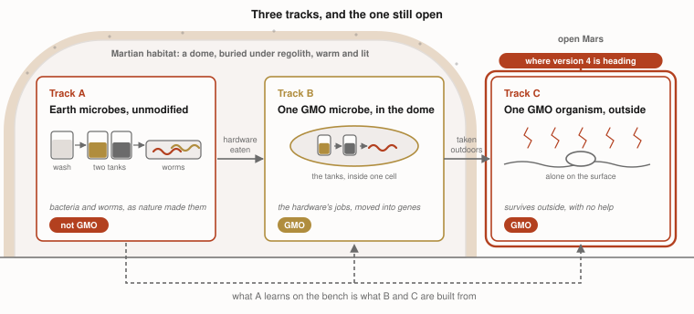
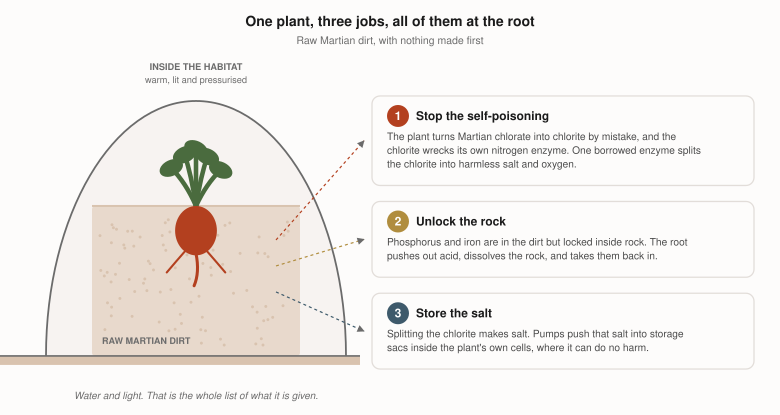

MarsWorm: the bioengineered plant
Where version 3 left off
Mars has dirt, not soil. Version 3 turned that dirt into soil in the dirt itself, with three ordinary Earth microbes, one borrowed gene and a box of earthworms. It needs no tanks and no pipework. It does need a warm, lit, pressurised dome to happen in, and it needs weeks of microbes and earthworms working before a single seed goes in.
Six things we tried first, and where they led
Version 3 left one job unfinished, the one version 2 had named track C: making soil outside the dome, on open Mars, where there is room for a settlement rather than a crew. We spent a long time trying to get the microbes of version 2 and version 3 out through the airlock. Each one has its own challenges, and each one taught us something.
| What we tried | The challenge it ran into | |
|---|---|---|
| 1 | Pipe the dome’s leftover salty water out to wet a patch of ground | The dome makes a few litres per tonne of dirt. Wetting one square metre needs about ten kilograms. A glass of water wets nothing |
| 2 | Carry finished soil out and spread it | Version 3 spends a gene and real effort taking salt out of that soil. Outside we would add salt back, then take it out again. Three steps that cancel |
| 3 | Leave the ground where it is and work it in place | The best of them. But the patch has to stay salty to stay wet, and nothing edible roots in salt. It makes ground, and feeds nobody |
| 4 | Cover a field with a thin pressurised sheet | About two and a half tonnes of lift on every square metre, and tens of tonnes of sheeting shipped per hectare. A farm you import from Earth is not a farm |
| 5 | Bury the field under rock instead | Roughly 44,000 cubic metres of digging per hectare, and then no sunlight reaches the crop |
| 6 | Grow moss and lichen in the open and eat the crust they make | They genuinely live at Martian pressure. But the yield is so low it needs about half a hectare per person, and nobody would call the result food |

All six attempts do the same thing. Each one builds a shelter, or carries supplies out of the dome, so a plant can have what Mars will not give it. The bigger the farm, the more it costs. A settlement needs the biggest farm of all, and that is where every one of them falls down.
What version 4 is
Every attempt to take the microbes outside was really an attempt to turn a patch of Mars into a piece of Earth. That is why they all cost so much. Farming on Earth is cheap for the opposite reason. Wheat already fits the field, so nobody has to build the field.
So version 4 leaves Mars alone and changes the plant instead. Version 1 had the same instinct, and asked its organism to survive Mars. Version 4 asks a plant to live in Martian dirt and make food out of it.
The job was never to make Earth soil on Mars, only to grow food and feed a settlement. And soil would not have been enough anyway. Spread version 3’s soil outside the dome and nothing grows in it, because a plant’s water boils at six millibars. Inside the dome, version 4 shows the soil was not needed at all. The ground was the wrong half of the problem.
We call this plant the Bioengineered Martian Pioneer, because in ecology a pioneer is the first thing to grow on bare ground, and bare ground is all Mars has. It stays inside the dome, where there is already pressure, warmth and light. So only one question is left.
How many genes would we have to change to make a plant grow in raw Martian dirt?
Why Martian dirt kills a plant
Perchlorate is toxic, but that is not what kills the plant. The plant does it to itself.
A plant has an enzyme that turns nitrate into food. That enzyme cannot tell chlorate from nitrate, so in Martian dirt it picks up chlorate and turns it into chlorite. Chlorite destroys the enzyme, and the plant is left with nitrate it cannot use.
Bacteria that live on perchlorate never have this trouble. They carry one extra enzyme that splits chlorite into harmless chloride and oxygen. Plants do not have it. That one missing enzyme is the whole difference, and it is the enzyme that lets version 3’s bacterium do its job.
That was the aha moment. Give a plant that same enzyme, in its roots, and the chlorite is split before it can do any harm. The nitrate enzyme survives, the plant goes on feeding, and Martian dirt stops being lethal. At its smallest, version 4 is one added gene.
The three jobs
Raw Martian dirt is not short of minerals. It holds chlorine salts, and the minerals it has are locked up. So the plant needs three things, and each has its own page.

| The job | Without it | What the plant is given | How sure we are | ||
|---|---|---|---|---|---|
| 1 | Stop the self-poisoning | The plant makes chlorite by mistake. Chlorite wrecks the enzyme it needs for nitrogen | One gene, borrowed from a bacterium. Two more genes would deal with perchlorate as well | The gene has never been put in a plant. The two perchlorate genes are the weakest part | |
| 2 | Unlock the rock | Phosphorus and iron are locked in rock. The plant starves in dirt that holds its food | Four of its own genes, turned up. The roots give off more acid | Nothing new is invented. Crops with these traits already grow on Earth | |
| 3 | Store the salt | Job 1 leaves chloride behind. Chloride in the leaves kills the plant | Two of its own salt pumps, turned up. They lock salt inside the cell | The safest part of the design. It is the one job version 4 makes for itself |
tested and working designed, waiting for a bench on paper
Read it end to end → · The genes →
Side by side with version 3
| Version 3 | Version 4 | |
|---|---|---|
| Before the first seed | weeks of microbes and earthworms | nothing |
| Organisms | three microbes and earthworms | one plant |
| The first meal grows in | soil that had to be made | Martian dirt, untouched |
| Genes added | one | one to nine |
What version 4 is asking for
Nothing here has been grown. So the asks are two.
- Ask 1: read the design and say where it falls down. About 30 minutes, with two specific questions. Design review.
- Ask 2: room in a lab. Four experiments. Lab request.
Three of the four experiments need no genetic modification at all. They add the thing the gene would have made, so the whole design can be checked before anyone builds a plant. The first one is pots of Mars simulant and radishes on a bench at ordinary pressure, and it is the cheapest experiment in the whole project.
Saanvi Pagadala · Granite Bay, CA